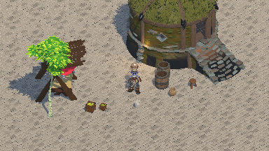
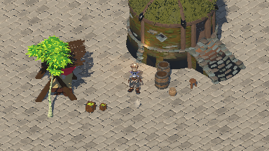
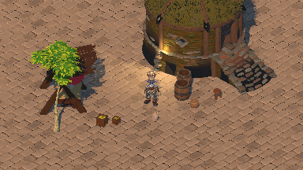
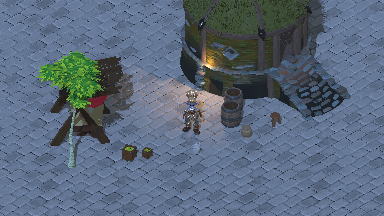

Briarwake · BW-097-T03 · reference-review-v7 · 2026-10-20
Project Titan · normal-scale visual review
Awaiting normal-scale readability, bounds, budget and deviation review
A 1.8m Adventurer stands on cobblestone paving beside a small market. Barrels, pottery,
containers, produce crates and a stool provide nearby detail; the house, birch and canopy
establish larger scale. Select each image to inspect its full resolution.
Normal ×1 · actual gameplay pixels
Normal means T02's 9m orthographic height, with a 1m focus and a 1.8m character. Reset still
starts in diagnostic ×2 (4.5m); it does not establish normal-scale readability. These desktop
images contain 384×216 pixels and display 1:1 when room permits.

Before · original lighting / 2m paving repeat · normal ×1

Revised · lateral key / reduced fill / 4m paving repeat · normal ×1
Matched normal ×1 framing isolates the lower ambient/fill, lateral key and 4m paving repeat.
Geometry, layout, pose and source maps are unchanged. Broader paving and more directional
shadows help scene structure; fine armor and face detail remain limited. Compare at actual
384×216 below; enlarged crops are diagnostic.
Normal ×1 framing · native-resolution PBR diagnostic · 9m height.
Matching pixelated view ·
Unchanged measured placements.
Before and after pixel presentation
Native-resolution PBR versus actual 384×216 nearest presentation at normal ×1. All three
lighting presets have matched pairs. The close Reset pair is diagnostic ×2 only; no custom
toon/outline shader is active. Day, normal ×1 / orthographic height 9m, focus 1m, heading
135°; same world, camera, pose, materials and lights. Both images have the same 1536×864
dimensions. Select an image to inspect the full-size capture.
Before · native-resolution PBR · pixel presentation off
After · 384×216 with nearest integer upscale · current prototype
Runtime checks exact physical presentation, shared world/camera framing, frozen source pixels
and restoration of update mode. A separate temporary native viewport leaves the original
384×216 viewport intact. This verifies a matched still snapshot, not future live-frame or
motion stability.
Comparison execution and image hashes. The
high-resolution image is diagnostic; gameplay readability still needs review at 384×216.
Principal concept and gameplay pixels
The original concept remains the appearance reference. The bounded courtyard uses the same
Titan assets and fourteen placements. Its PBR-only treatment does not reproduce the concept's
painted detail, selective lighting, dense village or missing effects. Artistic acceptance
remains pending.
Principal concept · unchanged SHA-256
12fb86f3b96226f20aacde1c135fcd3e29c7eb0fc4ffa6a68a3007b695fc3abc
Normal ×1 · 384×216 gameplay pixels · day / 9m height. This enlarged comparison is
diagnostic; use the 1:1 images above for readability.
Character, props, depth and lighting
Character
Principal concept · native source crop
Courtyard · projected region in the declared capture
Normal ×1 uses the unchanged T02 9m orthographic height; the previous 12m wide view and
4.5m initial close view did not establish this scale. At 384×216 the Adventurer reads as a
humanoid with a bun/head, torso, two arms and separated boots. Fine facial features and
armor engraving merge into a few pixels. Recognition and detail bounds still need human
review; diagnostic ×2 is not acceptance evidence. Geometry, 1.8m height and source pose
are unchanged.
Props
Principal concept · native source crop
Courtyard · projected region in the declared capture
The same fourteen measured placements and eleven exports remain: small
containers/produce/stool below the 1.8m actor, barrels about half its height,
canopy/house/birch larger. The barrel has simpler broad bands and an opening; the
character has much more high-frequency ornament. Enlarged paving repeats reduce competing
surface noise without adding scenery.
Contact
Principal concept · native source crop
Courtyard · projected region in the declared capture
Bases/supports and character footprint remain unchanged. The lower lateral key creates
more legible cast-shadow direction and blue shadow versus warm lit paving. The original
flat receiver repeats the same maps over 4m instead of 2m; this is an explicit reversible
presentation deviation. No AO/contact-depth or detailed collision certification is
claimed.
Palette
Principal concept · native source crop
Courtyard · projected region in the declared capture
Lower ambient/fill and a lateral key retain source hues while making warm/cool lighting
and shadow masses clearer. Original PBR maps and authored metal/roughness response remain;
detailed normal/metal highlights still undersample. There is no toon banding,
outline/highlight pass, atmosphere or final palette treatment.
Normal ×1 lighting matrix
Each image below has 384×216 source pixels, displayed 1:1 when room permits. Compare head,
torso, arms, boots and warm/cool separation here. Fine facial and armor detail remains
limited.
Day · 384×216 native pixels

Warm · 384×216 native pixels

Cool · 384×216 native pixels
Native Retina output with independent HUD
·
Exact source/settings/asset identities and image hashes
·
Investigation, failed trials and regression evidence
Matching native/pixel pairs:
warm native /
warm pixels;
cool native /
cool pixels.
Diagnostic ×2 · preserved Reset state
Diagnostic ×2 / 4.5m; Reset state, not normal-scale acceptance.
Native PBR /
matching pixelated image. This
pair cannot establish normal-scale acceptance.
Rendering diagnosis and deferred findings
Captured world output matches exact nearest 4× enlargement, with no intermediate smoothing.
High-frequency source textures, shading gradients and specular detail lose definition inside
384×216. Pixel presentation cannot restore subpixel features. Early capture-resize trials also
exposed one-level live-frame variation on a crate; the revised capture preserves the source
frame and restores updates, without claiming a live stability fix. No speculative sky/material
changes were retained.
| Owner |
Visible limitation / required verification |
| BW-097-T04 |
Live stationary one-level crate variation and future camera/actor crawl or jitter need
time-indexed frame review; no correction algorithm implemented.
|
| BW-097-T05 |
Fine armor/face detail, PBR gradients and highlights lack the concept’s selective bands,
one-pixel silhouettes and convex highlights; selected AA remains untested.
|
| BW-097-T06 |
Opaque/foliage/screen-reading ordering and transparency interaction are not certified by
these static courtyard images.
|
| BW-097-T07 |
The concept’s water/reflection/refraction cues have no current fixture or feasibility
proof.
|
| BW-097-T08 |
Flat receiver and ordinary shadows lack the concept’s authored contact depth and corner
separation; bounds tests are not AO feasibility.
|
| BW-097-T09 |
Combined moving effects, atmosphere and pass composition have not run. |
| BW-097-T10 / BW-098 / BW-099 |
Profiling/package proof and deliberate character/environment production remain deferred;
adding concept-level village density is outside this bounded fixture.
|
Imported fixture provenance
The user-selected Project Titan library supplies the character and courtyard assets. Source
and converted models/textures remain local; the recipe and rendered evidence are retained. The
original Unreal project is read-only. Reproduction requires an authorized local copy of that
library.
Selected asset recipe ·
Engine, source/dependency and converted hashes ·
Unreal export log
-
Eleven bounded exports supply a complete source character, nine scenery/prop meshes and a
paving-material donor. Source and converted assets remain local.
-
Source cloth/wind/Blueprint/gameplay behavior is not transferred; the character is frozen in
one compatible source idle.
-
Only selected PBR graphs/maps transfer. Unsaved texture duplicates disable virtual streaming
for export without modifying original material samplers or saved input assets.
-
Paving geometry is an original flat receiver with tiled authored Titan cobblestone textures;
terrain/steps do not authorize gameplay traversal.
Proposed observable bounds
| Area |
Review proposal |
Decision |
| detail |
At normal ×1 (9m height, 384×216), identify head/hair, torso, arms and two boots as a
complete humanoid with a clear ground silhouette. Review native gameplay pixels, not
enlarged diagnostic ×2 or the full-resolution PBR image. Fine facial/armor detail is
currently limited and requires an explicit accepted deviation or later T05/BW-098
improvement.
|
Proposed |
| proportions |
Use physically sensible scene proportions: character 1.8m; small items 0.25–0.5m;
barrels 0.85–0.9m; canopy 2.8m; house 4.8m; birch 5.2m. Pose precedes measurement;
uniform scaling preserves proportions. Bases contact ground/support and the character
footprint stays clear. Normal/diagnostic focus heights are both 1.0m; the 9m/4.5m
heights match T02 zooms. Reset remains close/day/135°.
|
Proposed |
| palette-depth-lighting |
The Adventurer silhouette remains separable from paving, the house and foliage in all
three lighting states. Boots and building foundations meet the ground; architecture
depth stays visible and amber light preserves character part separation.
|
Proposed |
| motion |
T04/T09 must show no stationary pixel changes, no repeated crawl/shimmer on rigid edges
during slow/diagonal tracking, no one-frame silhouette disappearance or outline-width
pumping. One internal-pixel silhouette lines and selective convex highlights are
reviewed in T05. No motion pass is claimed in T03.
|
Proposed |
| composition |
No filled-surface outlines, stale reflection/depth frames, actor disappearance or
unauthorized information in later combined cases; fallback deviations need explicit
review.
|
Proposed |
Provisional measurement budgets — approval required
Proposal for this source probe on Apple M2 Max / Metal: 60 FPS; CPU frame p95 ≤8 ms; GPU frame
p95 ≤8 ms; peak process RSS ≤1,024 MiB; peak engine rendering allocations ≤256 MiB. Use
384×216 internal and 960×640 logical output on actual Retina ×2. These are proposals, with no
measured compliance claim. T10 must retain warmup, raw samples, percentiles and separate
process/engine memory accounting; unavailable GPU timings cannot pass.
Proposed deviations
-
User-selected Project Titan assets replace the Moore RPG fixture. A complete source
Adventurer avoids modular-part alignment errors. The house, birch, market furniture and
small props form a courtyard rather than an asset lineup.
-
The existing flat receiver uses unchanged Titan cobblestone maps at a reversible 4m repeat
instead of 2m, making broad paving shapes easier to read. No source texture, source
geometry, asset scale or layout changed.
-
Source graphs and virtual-texture readbacks produced black or white exports. Unsaved PBR
materials and unsaved conventional texture duplicates transfer the original authored maps
per slot, while preserving original material samplers. Export limitations remain explicit.
-
Normal ×1 returns to the established T02 9m height. Diagnostic ×2 is 4.5m; both focus at 1m.
Reset deliberately retains the existing close/day/135° state. The review evaluates normal ×1
separately. Key rotation is −45°/−55°, fill 0.15 and ambient 0.25/0.18/0.25 for
day/warm/cool; this local lighting differs from the source environment.
-
No final toon/outline, motion, water, contact-depth, atmosphere or performance/package
acceptance is claimed.
Supplementary research
-
Outlines / Camera / Lighting
· Low-poly silhouettes, independent convex highlights, grid-aligned camera with residual
correction, restrained toon light. These guide later cases; historical custom Godot build is
not current capability evidence. Article text inspected 2026-10-19
-
Depth and normal outlines ·
Neighbor texel tests and surface/view-angle artifact checks inform T05; Unity-specific
implementation and SMAA are not adopted as Godot defaults.
Article text inspected 2026-10-19
-
00:03 · At 00:03 the
Unity game-view scene separates pale stone stairs/columns and brown ground from green
foliage with broad cast shadows. Adopt the readable large masses and restrained green/stone
palette as a comparison observation; this is neither the principal appearance target nor
Godot capability evidence.
Actual decoded frame visually inspected by Codex on 2026-10-19; no human art
approval.
Inspected frame
-
00:30 · At 00:30 the
Blender view shows plain squared columns with stepped bases and simple stair/terrain masses
before detailed surface work. Adopt simple architectural prop silhouettes beneath
character-level detail; no model, texture or authoring pipeline is copied. This modeling
view cannot certify gameplay pixel readability.
Actual decoded frame visually inspected by Codex on 2026-10-19; no human art
approval.
Inspected frame
Review decision
Reviewer: None · approval: None
-
Human recognition/detail acceptance at normal ×1 has not been received. Fine face/armor
detail remains less legible than the painted concept; diagnostic ×2 cannot close this
finding.
-
Human approval of visual/motion bounds, proposed unmeasured budgets and deviations has not
been received.
-
Stationary live frames in early normal-scale trials differed by up to one RGB level on a
small crate. Sky debanding/quality/reflection experiments did not establish a cause and
were discarded. Native capture now preserves the displayed source frame in a
separate-viewport comparison. This is not live-frame stability approval; T04 must
investigate full stationary/motion sequences.
Confirm or revise the visual bounds, budgets and deviations. Supplementary frames at 00:03
and 00:30 have been inspected separately; the original 00:00/04:40 proposals are superseded.
Human approval establishes a comparison baseline only. Later motion/effect/package tests
remain required.
Source of review decisions: visual-review.json. Regenerate
this sheet with python3 validation/tickets/BW-097-T03/build_review.py from
mmo_docs/. The concept remains unchanged, comparison crops use SVG view boxes, and no
reference art is imported into the game.